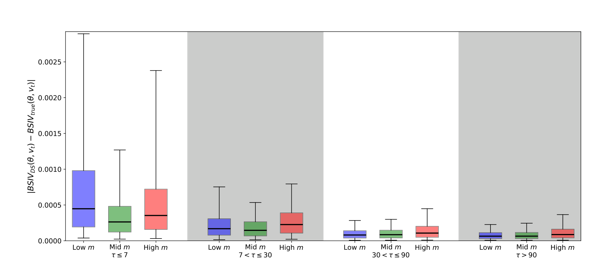
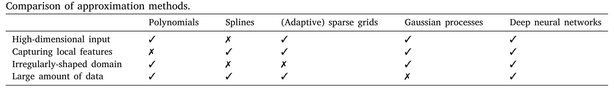
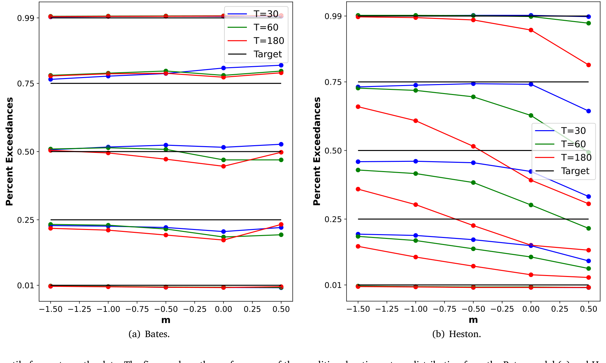
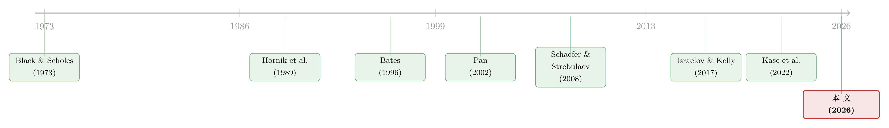

把结构模型「蒸馏」成一张查找表：深度代理与期权定价
本文读的是 Chen, Didisheim & Scheidegger (2026, Journal of Financial Economics)：他们提出「深度代理 (deep surrogate)」——用一张深度神经网络去高精度逼近一个昂贵的结构模型，把模型的求值与估计提速好几个数量级。作为示范，他们给一个 13 维的 Bates 期权定价模型造了一个代理，于是「每天重估一次模型」这种过去算不起的事变得可行：由此造出的尾部风险指数能强力预测股市崩盘，参数不稳定程度能解释期权市场的流动性，还能系统地比较结构式与简约式定价的优劣。
1 引言：当一个模型贵到「算不起」
先说一个做结构模型的人都心知肚明、却很少摆到台面上的尴尬。
一个像样的结构模型，往往有十几个状态变量和参数。你要估计它，得反复地把模型「跑」很多遍——广义矩估计 (generalized method of moments, GMM) 要算一大堆矩条件、贝叶斯估计要在参数空间里走成千上万步、做样本外分析还得在一个滚动窗口里一遍遍重估参数。每跑一遍模型本身可能就要解一个偏微分方程、做一次数值积分、或者跑一遍蒙特卡洛。于是计算成本不是线性地、而是指数地膨胀——这就是那个老对手，维数灾难 (curse of dimensionality)：每多一个自由度，要覆盖的输入空间就翻一个量级。
结果是什么？是很多「本该做」的分析，因为算不起，就没人做。比如，一个期权定价的结构模型到底样本外表现如何？要老实回答这个问题，你得在每一天、用截至当天的信息重新估一遍参数，再看它对明天的预测准不准——既要捕捉参数的时变，又不能有前视偏差 (look-ahead bias)。听上去理所应当，可一旦模型本身求值就贵，这件事在实践中几乎做不了。
所以真正的张力在这里：不是我们不知道该做什么分析，而是模型太贵，让我们做不起。
这篇论文的回答出奇地干脆：那就别老去跑那个贵模型了——先一劳永逸地训练一个又快又准的「替身」，之后所有的活儿都交给替身。
2 核心思路：把参数也当成「状态」
这个替身，他们叫它「深度代理 (deep surrogate)」。
代理模型 (surrogate model) 这个概念本身并不新，物理和工程里早就有了：当一个函数贵得算不起，就用一个便宜的近似函数顶上。论文自己举了个再亲切不过的例子——标准正态分布表。Φ(z) 的积分没有解析解，但我们从不在用的时候临场去算积分，而是去查一张早就算好的表。代理模型，本质上就是一张「查好的表」。
那把结构模型也做成一张查找表，难在哪？难在维度。我们想要的不只是「给定一组参数，模型对各种状态的输出」,而是「给定任意一组参数、再加上任意状态，模型的输出」。
而这恰恰是这篇论文最关键、也最漂亮的一步：把模型参数 \(\theta\) 也当成状态变量来处理（论文称之为「伪状态 (pseudo-states)」）。
先看原始的结构模型，它把状态 \(s\) 映射到我们关心的输出 \(y\)（价格、政策、矩……）：
$$ y = f(s \mid \theta) $$
其中 \(\theta \in \mathbb{R}^p\) 是模型参数。通常我们会觉得 \(s\) 是「变量」、\(\theta\) 是「外生给定的常数」。但论文说：不妨把它们拼在一起，定义一个增广输入 (augmented state)
$$ x \equiv [s, \theta], \quad x \in \mathbb{R}^d, \quad d = n + p $$
于是原模型就被改写成一个普通的、单一的高维函数：
$$ y = f(x) $$
这一步看着平平无奇，威力却极大。它意味着：你只需要训练一个代理，就能覆盖所有参数取值下的模型——参数变了，不用重训，只是查表时换一个输入坐标而已。正因如此，事后想做「每天换一组参数重估一次」这种事，才不需要每天重新解模型。
代价当然也明摆着：输入维度从 \(n\) 涨到了 \(n+p\)。论文里那个 Bates 模型，\(s\) 和 \(\theta\) 加起来一共 \(d = 13\) 维。要在 13 维空间里造一张精度够高的查找表，传统的网格法是绝望的——哪怕每个维度只取 10 个格点，也是 $10^{13}$ 个点。所以接下来一个自然的问题是：用什么函数类来当这张「表」，才既能装下 13 维、又不被维数灾难压垮？
3 方法的骨架：训练、验证、再训练
答案是深度神经网络 (deep neural network, DNN)。在解释「为什么偏偏是它」之前，先把代理是怎么造出来的讲清楚——因为这套流程本身就很讲究。
一个 \(L\) 层的前馈网络，逐层做的事情无非是一次线性变换加一次非线性激活：
$$ x^{[\ell]} = \sigma\!\left( W_\ell\, x^{[\ell-1]} + b_\ell \right) $$
其中 \(x^{[0]}\) 是输入（也就是我们的增广状态 \(x\)），\(x^{[L]}\) 是输出，\(\sigma(\cdot)\) 是逐元素作用的激活函数。整个代理 \(\hat f\) 由网络参数 \(\phi = \big((W_\ell, b_\ell)\big)_{\ell=1}^{L}\) 刻画。
训练的目标，就是让代理 \(\hat f\) 在训练样本上尽量贴近真值。这里要嵌入这篇论文最核心的那个方程——
损失函数 \(\mathcal{L}\) 他们取 \(\ell_1\) 范数，也就是平均绝对误差。
到这一步，看上去和普通的机器学习没什么两样。但真正关键的一步在于：这里的「数据」是我们自己生产的。 普通机器学习面对的是一个未知的数据生成过程，样本有限、还带着噪声；可在这里，我们完全知道真模型 \(f\) 长什么样，想要多少训练样本就能生成多少，而且每个标签 \(y_i = f(x_i)\) 几乎是无噪声的（只有数值误差）。
这件事的含义是深刻的。它意味着——
- 过拟合的风险极低。 既然信噪比近乎无穷、样本可以要多少有多少，那套防过拟合的常规操作（早停 early stopping、随机失活 dropout、网络收缩）统统可以不要，放心大胆地用一个近百万参数的大网络、训练很多个 epoch。
- 训练样本怎么撒点，是可以设计的。 论文从输入空间这个超立方体里随机采样：
$$ \tilde{x}_i = \underline{x} + \tilde{R}_i\,(\bar{x} - \underline{x}) $$
\(\tilde R_i\) 是对角随机矩阵。更妙的是，他们用一套主动学习 (active learning) 的迭代法：哪里逼近误差大，就往哪里多撒点、再加深加宽网络，重训、重验，直到达标。
那「达标」是什么意思？这里又是一个不容马虎的细节。他们要求的不是「平均误差小」，而是在整个输入空间上一致地小——用一个独立的验证集 \(\big(x_j^o, y_j^o\big)_{j=1}^N\) 去检验：
$$ \sup_{j}\ \mathcal{L}\!\left(\hat{f}(x_j^o \mid \phi^*),\, f(x_j^o)\right) \le \varepsilon $$
注意是 \(\sup\) 不是平均。这对后面用代理做估计至关重要：你不能只在「常见参数」附近准、到了尾部参数就崩，否则 GMM 一旦把估计推到那些区域，整个推断就废了。
最终的成绩单：一个 7 个隐藏层、近百万参数的网络，训练样本规模约 $10^9$（十亿）。听上去很多，但放在 \(d=13\) 的空间里其实极其稀疏——别忘了，传统网格法那是 $10^{13}$ 起步的量级。代理一旦造好，模型求值和估计的平均耗时，直接降了好几个数量级。
下面这张图能直观感受代理的精度——绝对定价误差的分布被压得极小。

Figure 1: shows the distributions of absolute pricing errors within
4 为什么是深度网络？为什么是 Swish？
到这里你可能会问：逼近高维函数的方法那么多——多项式、样条、（自适应）稀疏网格、高斯过程……凭什么是神经网络？
论文给了一张很说明问题的对比表（如表 1 所示）：要同时满足「能装高维输入」「能捕捉局部特征」「能处理不规则形状的定义域」「能吃下海量数据」这几条，多项式不行、样条不行、稀疏网格不行、高斯过程也卡在「海量数据」这一关——唯有深度神经网络一路全绿。

Table 1
更重要的是有理论撑腰。一是万能逼近定理 (universal approximation theorem, Hornik et al., 1989)：只要目标函数足够光滑、定义域有界、训练点撒得还算均匀，网络就能用不算大的规模「学」出它的特征。二是近年一串结果证明：对一大类经济金融里常见的函数（比如仿射类期权定价模型），所需训练样本规模只随输入维度多项式地增长（Grohs et al., 2023; Berner et al., 2020），而非网格法那样指数膨胀——维数灾难在这里被显著缓解了。
但接着，一个看似技术、实则要命的问题冒了出来：激活函数选哪个？
这正是论文一个被低估的贡献。他们指出：在造高维代理、并且要用它做估计这件事上，Swish 激活函数 (Ramachandran et al., 2017) 系统性地优于人们熟知的 sigmoid 和 ReLU。原因不在于「拟合得多准」，而在于梯度：
- sigmoid 有梯度消失 (vanishing gradient) 的老毛病，深网络里没法用；
- ReLU 在零点不可导，于是哪怕它把价格本身拟合得和 Swish 一样好，它产出的函数梯度误差会大得多;
- 而 GMM 这类极值估计量，恰恰要把代理的梯度（通过自动微分 automatic differentiation 算出来）当作核心输入。
这一点很容易被忽视，却是这套方法能用来做估计而不仅仅是求值的命门。代理不光要把 \(y\) 算对，还得把 \(\partial y/\partial \theta\) 算对——因为估计参数靠的就是这个导数。Swish 处处可导，于是它给出的 greeks 和参数识别都更稳。
5 应用一：每天重估一次，造一个崩盘指数
方法讲完，戏肉来了。代理一旦在手，那些「过去算不起」的分析就一个接一个变得可行。
他们挑的练兵场是 Bates 模型——一个带随机波动率 (stochastic volatility) 的双指数跳跃扩散 (jump-diffusion) 模型，是 Bates (1996) 的直接推广。靠着代理，他们可以每天用当天的期权面板重估一次这个 13 维模型。
每天重估能换来什么独一无二的信息？是市场情绪里那些转瞬即逝的东西：股价变动与瞬时方差之间的相关性随时间的摆动——也就是著名的杠杆效应 (leverage effect, Black, 1976)；以及向上跳和向下跳的风险不对称。
把这些估出来的参数一组合，就得到一个日频的尾部风险指数 \(TailRisk\)——它度量的是「未来一周内，市场指数因一次向下跳跃而遭受的风险中性预期损失」。
这个指数有用吗？非常有用。无论你把「尾部事件」定义成「未来 5 天内标普 500 累计跌 10% 以上」，还是「未来 5 天里任意一天单日跌 5% 以上」，在一个 logistic 回归里加入 \(TailRisk\) 之后，伪 \(R^2\) 相比只用 Bollerslev et al. (2015) 那个非参数的左尾概率度量，几乎翻了一倍。换句话说，从结构模型里榨出来的这个尾部风险，对真实崩盘的预测力，明显强过现成的简约式度量。
6 应用二：参数越「不安分」，市场越「不流动」
接着，一个更有意思的问题浮出水面。
既然每天都在重估，那不妨问一句：这个模型的参数，到底稳不稳？
用 Andersen et al. (2015) 提出的统计检验，他们构造了一个参数不稳定 (parameter instability) 的度量。结果相当扎眼：在 1% 的显著性水平上，他们有 41.6% 的时间会拒绝「相邻两天参数相同」这个假设。也就是说，这个被广泛使用的结构模型，参数三天两头就在变——这本身就是对「结构模型设定」的一记拷问。
但论文没有停在「打脸模型」这一步，而是顺势把参数不稳定接到了一个真实的经济变量上：期权市场的流动性。
逻辑是这样的：当定价模型变得不稳定，期权做市商就更难准确对冲手里存货的风险；对冲越难，他们的风险偏好越低，提供的流动性也就越少。于是预测应当是——参数越不稳定，买卖价差越宽。
数据印证了这一点：参数不稳定程度与 SPX 期权的相对买卖价差 (relative bid–ask spread) 之间，存在一个正向且统计显著的关系；而且在控制了合约固定效应、合约层面的异常成交量、到期时间和价值状态 (moneyness) 之后，这个系数依然显著为正。
这条「模型不稳定 → 做市商难对冲 → 流动性收缩」的链路，和做市商风险承受能力影响流动性的那套逻辑是相通的——关于做市商如何在风险约束下定价，可参见《无风险市场里的风险厌恶：是谁给做市商系上了「风险限额」这根绳》。
7 应用三：结构式 vs 简约式，谁赢？
第三件「过去算不起」的事，是系统地考查 Bates 模型的样本外表现。
要做得干净，就得每天滚动重估、严防前视偏差——这正是开篇说的那个「理所应当却做不起」的分析。代理把这道坎抹平了。对照组是一个简约式 (reduced-form) 基准：用随机森林 (random forest, RF, Breiman, 2001) 去拟合隐含波动率曲面 (implied volatility surface)。
结果是一个漂亮的此消彼长 (tradeoff)：
- 短期限期权（到期 ≤ 7 天）：在各种价值状态下，Bates 模型输给 RF；
- 长期限期权（到期 > 90 天）：Bates 反超 RF；
- Bates 在平价附近 (near-the-money)、以及买卖价差较低的期权上，相对表现更强。
怎么理解？短期限、深度价外、高价差的期权，对流动性因素、需求因素，以及 Bates 没纳入的特定跳跃动态更敏感——这些恰恰是结构模型因为「为了可解而抽象掉」的部分，于是它在这里吃了设定误差 (misspecification) 的亏。反过来，长期限期权更多反映的是基本面风险敞口，结构模型的约束在这里成了优点。
更有意思的是边界效应：当市场波动或跳跃风险从训练期到预测时点上升，或者期权的执行价、到期日远离训练样本的质量中心时，Bates 的相对优势会扩大。原因在简约式那一侧——非参数的波动率曲面靠的是插值（边界内）和外推（边界外），一旦逼近训练数据的边缘，它就开始失灵。
一句话总结这个 tradeoff：简约式模型在设定误差严重时表现更好，但一出训练数据的范围就「泛化」不动了；结构模型恰恰相反。 这和「把机器学习用在信用市场、要不要给黑箱加结构」的讨论遥相呼应——可参见《把机器学习的黑箱拆成玻璃箱：公司债收益率能被「看懂」地预测吗？》。
8 应用四：期权收益的条件分布——一种全新的检验
最后，代理还解锁了一件很难独立做到的事：刻画期权收益的条件分布。
沿用 Israelov & Kelly (2017) 的思路，他们对相关状态估一个向量自回归 (vector autoregression, VAR)，用自助法 (bootstrapping) 模拟出未来状态的一个分布，再用代理沿着每条路径高效地把期权价格都算出来——这一步若没有代理，计算量是吓人的。
由此得到的模型隐含条件收益分布（尤其是它的分位数预测），可以直接拿去和数据对质。这其实提供了一种全新的模型检验方式：不只看模型能不能把价格的均值定对，而是看它能不能把整条收益分布的形状定对。
检验揭示出 Bates 模型相对 Heston 模型 (Heston, 1993) 的明显优势——后者没有跳跃，于是在匹配收益分布时力不从心（如图 9 所示）。这对风险管理也直接有用：你拿到的不再是一个点预测，而是一整条分布。

Figure 9: Quantile forecasts vs. the data. The figures show the performance of the conditional option return distribution from the Bates model (a) and
9 文献脉络
把这篇论文放回它所在的坐标系，会看得更清楚。它其实站在三条河的交汇处。
第一条河，是期权定价的结构模型。 从 Black & Scholes (1973) 立下基石，到 Heston (1993) 给随机波动率一个闭式解，再到 Bates (1996) 把跳跃和随机波动率揉到一起，以及 Pan (2002) 从期权里识别跳跃风险溢价——这条线越走越复杂，也越走越贵。本文要「替身」的那个 Bates 模型，正是这条线的产物。

第二条河，是用神经网络做逼近的理论。 Hornik et al. (1989) 的万能逼近定理是源头；近年 Grohs et al. (2023)、Berner et al. (2020) 进一步证明，网络在逼近 Black–Scholes 偏微分方程这类问题上能突破维数灾难。这给「用网络当代理」提供了理论上的底气。
第三条河，是把神经网络当成估计工具的新潮流。 早在 Hutchinson, Lo & Poggio (1994) 就用网络给衍生品定价、对冲；而更晚近、也更贴近本文的，是 Kase et al. (2022) 用网络代理去逼近 HANK 模型的似然函数、以及 Kaji et al. (2023) 的对抗式结构估计——它们都是「拿网络去加速结构模型的估计」这一思路的同道。
本文坐落在三河交汇处：它不只是用网络给一个模型当替身，而是把参数当伪状态、造出一个能反复重估的通用代理，再用它去做一连串过去算不起的实证。和它最近的对照是 Gao & Pan (2023)（同样从期权里估结构模型、造崩盘指数），以及 Christoffersen & Jacobs (2004)（比较简约式与 Heston 的样本外定价）。值得一提的是，本文「结构模型在设定误差较轻、且看重泛化时能赢过简约式」的结论，呼应了 Schaefer & Strebulaev (2008) 在公司债市场的发现——结构信用模型对样本外对冲比率是有信息的。这条线，对做信用市场的人格外亲切。
评论与延伸（Q&A + 研究方向）
(a) 几个可能的疑问
Q：「深度代理」和直接拿神经网络去做资产定价（比如经验资产定价那一派）到底有什么不同？
区别在目标。经验资产定价里的网络是去拟合未知的真实世界数据（数据生成过程未知、有噪声、特征可能缺失）。而深度代理拟合的是一个已知的结构模型 \(f\)——数据生成过程完全已知、标签近乎无噪声、想要多少样本有多少。所以代理本质上是给一个确定性函数做高精度查表，不是去「发现」收益的预测因子。
Q：用代理去做 GMM 估计，会不会「近似误差冒充成参数信号」，把估计带偏？
这正是他们坚持用 \(\sup\) 范数验收（式 7）、而不是平均误差的原因——要求逼近在整个输入空间上一致地准，包括尾部参数区。再加上 Swish 保证梯度也准，论文通过模拟验证了代理不仅能把价格和 greeks 算对，还能在 GMM 里准确识别出真实结构参数。当然，这建立在「\(\varepsilon\) 足够小」的前提上，代理误差对最终推断的传导，仍值得使用者警惕。
Q：参数 41.6% 的时间都在变，这不正说明 Bates 模型本身就是错的吗？
是，也不全是。频繁的参数漂移确实暴露了结构模型的设定误差——这是个负面信号。但论文的高明之处在于，它不把参数不稳定当「噪声」扔掉，而是把它变成一个有信息的变量：不稳定程度本身能预测期权市场的流动性。模型的「不完美」，反而成了度量市场状态的一把尺子。
Q：既然简约式（随机森林）在短期限期权上更准，为什么还要费劲用结构模型？
因为结构模型在两件事上不可替代：一是泛化——当市场状态跑出训练样本范围（波动率飙升、执行价/期限远离常态）时，非参数方法靠插值外推会失灵，而结构模型靠经济约束撑得住；二是可解释的状态——结构模型能吐出杠杆效应、跳跃不对称这些有经济含义的参数，进而造出 \(TailRisk\) 这种指数，简约式给不了。
Q：把参数当「伪状态」会让输入维度变高，这难道不是把维数灾难请回来了吗？
维度确实涨了（\(d=n+p=13\)）。但关键在于：神经网络逼近这类光滑函数所需的样本量只随维度多项式增长，而非网格法的指数增长。所以代价是可控的——用 $10^9$ 个样本就够了，远小于网格法需要的 $10^{13}$。这正是「为什么必须是神经网络」的根本理由。
Q：代理训练好之后，能直接拿去用在别的模型上吗？
不能——一个代理对应一个特定的结构模型族（这里是 Bates）。但好处是它一次训练、永久复用、且易于分享：论文把训练好的 Bates 代理公开了。这意味着别人不必重复昂贵的训练，可以直接在它之上做研究——避免了各自复现的成本与不确定性。
(b) 几个可能的研究问题与提案
1）把深度代理搬到公司债的结构信用模型上
【经济故事】Schaefer & Strebulaev (2008) 已证明结构信用模型对公司债对冲比率有信息。但这类模型（如带跳跃的 Merton 扩展）估计同样昂贵，做不了高频重估。若给它造一个代理，就能像本文重估 Bates 那样每天重估信用模型，构造一个债券市场的「违约尾部风险指数」，并检验它对信用利差骤扩、评级下调的预测力。 【可行性】中。需要 TRACE 债券交易数据 + 公司基本面（Compustat）+ 一个设定清楚的结构信用模型。难点在结构模型的选择与状态识别，但代理的方法论是现成的、可迁移的。
2）参数不稳定与公司债做市商流动性
【经济故事】本文把「期权定价模型不稳定 → 做市商难对冲 → 流动性收缩」这条链路在 SPX 期权上跑通了。公司债是个出了名的做市商主导、流动性稀薄的市场。一个自然的问题是：当信用定价模型变得不稳定时，公司债的买卖价差是否也会变宽？ 【可行性】中高。TRACE 能给到债券层面的价差和成交量，结合提案 1 造出的信用模型不稳定度量，可以直接复刻本文那个「不稳定 → 价差」的面板回归（控制债券固定效应、成交量、久期等），识别上有现成模板。
3）外资持有人结构与期权隐含尾部风险
【经济故事】本文的 \(TailRisk\) 是个日频的、市场层面的崩盘风险度量。一个有意思的延伸是：当一个市场的外资持有比例较高、且外资更容易在风险上升时撤离时，期权隐含的尾部风险是否系统性更高、对真实崩盘的预测力是否更强？ 【可行性】中。需要把 \(TailRisk\) 类指数推广到有活跃指数期权的多个国家市场，再匹配外资持有数据（如各国托管/EPFR 类数据）。识别是难点（外资比例内生），但作为相关性的描述性证据是 doable 的。
4）用条件收益分布做更细的模型筛选
【经济故事】本文用「能否匹配条件收益分布」把 Bates 和 Heston 区分开了。这把尺子可以更系统化：把一整族期权模型（不同跳跃设定、不同波动率结构）都造成代理，用同一套分位数检验给它们排座次，看到底哪类设定对分布的哪一段（左尾 vs 右尾）贡献最大。 【可行性】高。方法论完全是本文的直接外推，公开的 Bates 代理已经把第一块积木摆好了；主要工作量在多造几个代理、设计分位数检验的统计量。
我的判断
这篇论文的贡献，我认为有两层。方法层面，它把「代理模型 + 把参数当伪状态」这个组合，干净利落地引进了结构金融模型的求值与估计，并诚实地解决了从「能求值」到「能估计」的关键障碍（梯度精度、\(\sup\) 范数验收、Swish 的选择）——这些都是真正动手做过的人才会在意的细节。实证层面，它证明了「方法解锁科学」：一旦模型不再贵，每天重估、参数稳定性检验、严格的样本外比较、条件分布检验，这一连串过去做不起的分析就一起涌了出来，而且每一个都给出了像样的经济发现（崩盘预测、流动性、结构 vs 简约的边界）。
对识别，我有两点保留。其一，整套实证的可信度，完全押在代理的逼近精度上——\(\sup\) 误差 \(\varepsilon\) 哪怕只是在尾部参数区悄悄变大，GMM 估计和后续的 \(TailRisk\)、不稳定度量都可能被污染，而这种误差的传导论文谈得还不够透。其二，「参数不稳定 → 流动性」那条结果是相关性而非因果：参数不稳定和买卖价差很可能被同一个潜在的市场压力因子同时驱动，控制固定效应缓解不了这种同时性内生。
后续我最想看到两件事：一是把这套方法搬去做信用/公司债的结构模型，看「结构式在泛化上占优」的结论在那个更不流动、做市商更主导的市场里是否依然成立；二是更严肃地刻画代理近似误差对下游推断的传导——给出一个「代理误差 → 估计偏差」的可计算界，让使用者知道自己的结论有多稳。
参考文献
- Bates, David S. (1996). Jumps and stochastic volatility: Exchange rate processes implicit in deutsche mark options. Review of Financial Studies 9(1), 69–107.
- Berner, Julius, Grohs, Philipp, Jentzen, Arnulf (2020). Analysis of the generalization error: Empirical risk minimization over deep artificial neural networks overcomes the curse of dimensionality in the numerical approximation of Black–Scholes partial differential equations. SIAM Journal on Mathematics of Data Science 2(3), 631–657.
- Black, Fischer (1976). Studies of stock price volatility changes. Proceedings of the 1976 Meetings of the American Statistical Association, 171–181.
- Black, Fischer, Scholes, Myron (1973). The pricing of options and corporate liabilities. Journal of Political Economy 81(3), 637–654.
- Bollerslev, Tim, Todorov, Viktor, Xu, Lai (2015). Tail risk premia and return predictability. (作为 \(TailRisk\) 的非参数对照度量被引用)
- Christoffersen, Peter, Jacobs, Kris (2004). The importance of the loss function in option valuation. Journal of Financial Economics 72(2), 291–318.
- Gao, Junxiong, Pan, Jun (2023). Option-Implied Crash Index. Working Paper.
- Grohs, Philipp, Hornung, Fabian, Jentzen, Arnulf, von Wurstemberger, Philippe (2023). A proof that artificial neural networks overcome the curse of dimensionality in the numerical approximation of Black–Scholes partial differential equations. Memoirs of the American Mathematical Society 284(1410).
- Hansen, Lars Peter (1982). Large sample properties of generalized method of moments estimators. Econometrica 50(4), 1029–1054.
- Heston, Steven L. (1993). A closed-form solution for options with stochastic volatility with applications to bond and currency options. Review of Financial Studies 6(2), 327–343.
- Hornik, Kurt, Stinchcombe, Maxwell, White, Halbert (1989). Multilayer feedforward networks are universal approximators. Neural Networks 2(5), 359–366.
- Hutchinson, James M., Lo, Andrew W., Poggio, Tomaso (1994). A nonparametric approach to pricing and hedging derivative securities via learning networks. Journal of Finance 49(3), 851–889.
- Andersen, Torben G., Fusari, Nicola, Todorov, Viktor (2015). Parametric inference and dynamic state recovery from option panels. Econometrica 83(3), 1081–1145.
- Israelov, Roni, Kelly, Bryan T. (2017). Forecasting the distribution of option returns. SSRN Working Paper 3033242.
- Kaji, Tetsuya, Manresa, Elena, Pouliot, Guillaume (2023). An adversarial approach to structural estimation. Econometrica 91(6), 2041–2063.
- Kase, Hanno, Melosi, Leonardo, Rottner, Matthias (2022). Estimating nonlinear heterogeneous agents models with neural networks. SSRN Working Paper 4138711.
- Pan, Jun (2002). The jump-risk premia implicit in options: Evidence from an integrated time-series study. Journal of Financial Economics 63(1), 3–50.
- Ramachandran, Prajit, Zoph, Barret, Le, Quoc V. (2017). Swish: A self-gated activation function. arXiv:1710.05941.
- Schaefer, Stephen M., Strebulaev, Ilya A. (2008). Structural models of credit risk are useful: Evidence from hedge ratios on corporate bonds. Journal of Financial Economics 90(1), 1–19.